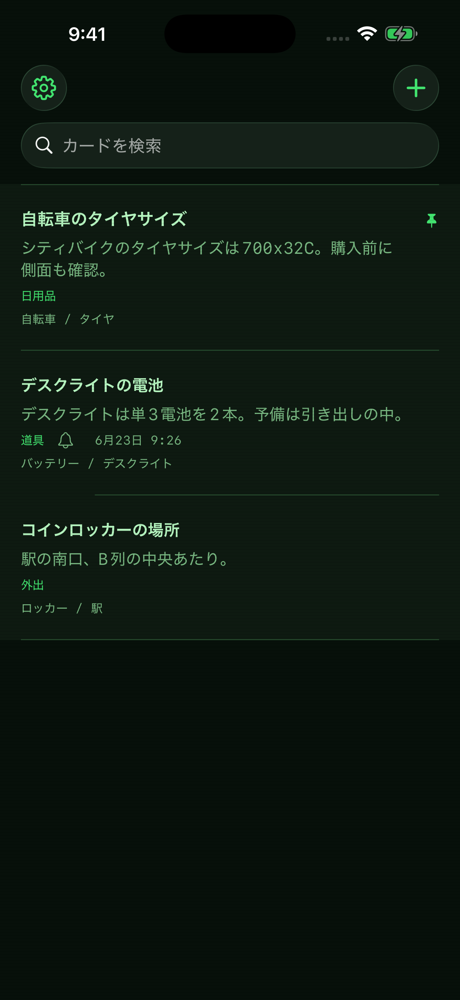
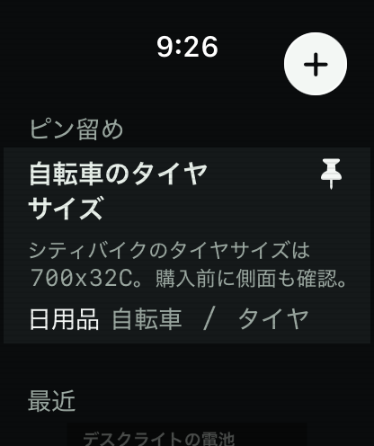
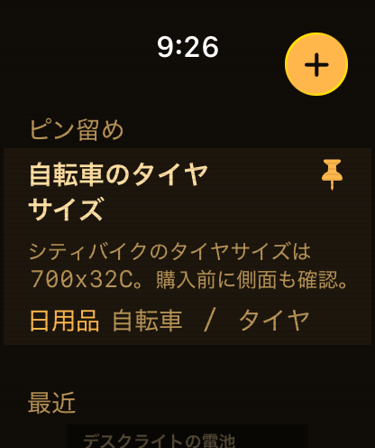
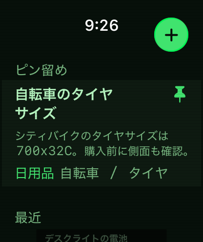
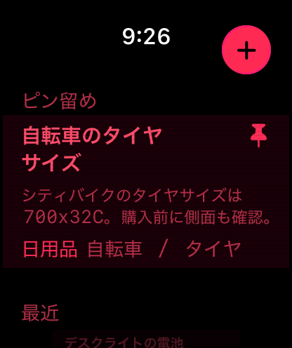
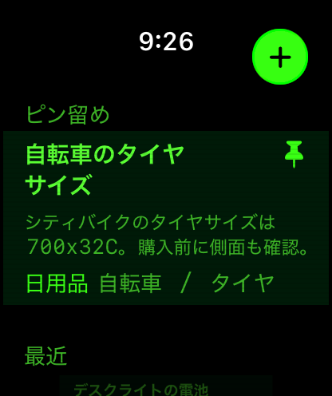
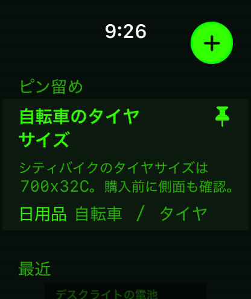
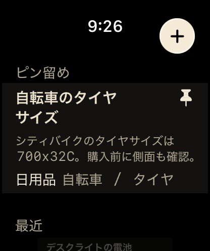

iPhoneで記憶カードを登録。Apple Watchで1〜2文字入力するだけで、必要な情報がすぐ見つかる。手首の外部記憶。
覚えておきたいことをカードに登録。タイヤサイズ、ロッカー番号、人の名前。カテゴリで整理できます。
Apple Watchで1〜2文字入力するだけ。インクリメンタル検索で候補を即絞り込み。3秒で思い出す。
間隔反復（1日→3日→1週間）で記憶を定着。忘れかけた頃に、もう一度思い出させてくれます。
Apple Watchで1〜2文字入力するだけで、登録した記憶カードを即座に絞り込み。ピン留めしたカードはホーム画面で検索不要。

記憶カードの作成・編集・カテゴリ分類はiPhoneアプリで。WatchConnectivityで自動同期。Watchは呼び出し専用。
間隔反復で記憶を定着。1日後→3日後→1週間後に再表示。大事な情報を、頭にしっかり残す。







CRT・アンバー・グリーン・ネオンレッド・ネオングリーン・ターミナル・レトロ。レトロ端末風テーマで、あなただけの記憶装置に。
当社のサーバーには何も届きません。カードの内容も設定も、すべてあなたのデバイスの中だけに存在します。